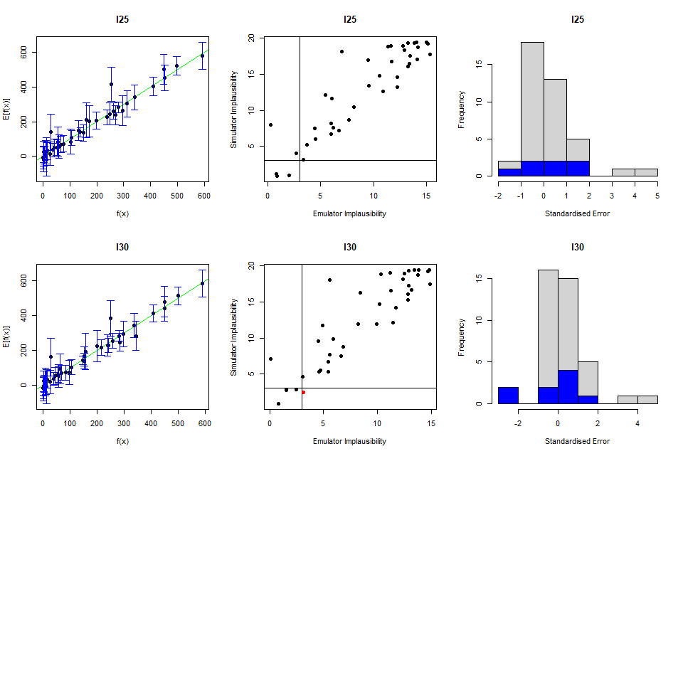
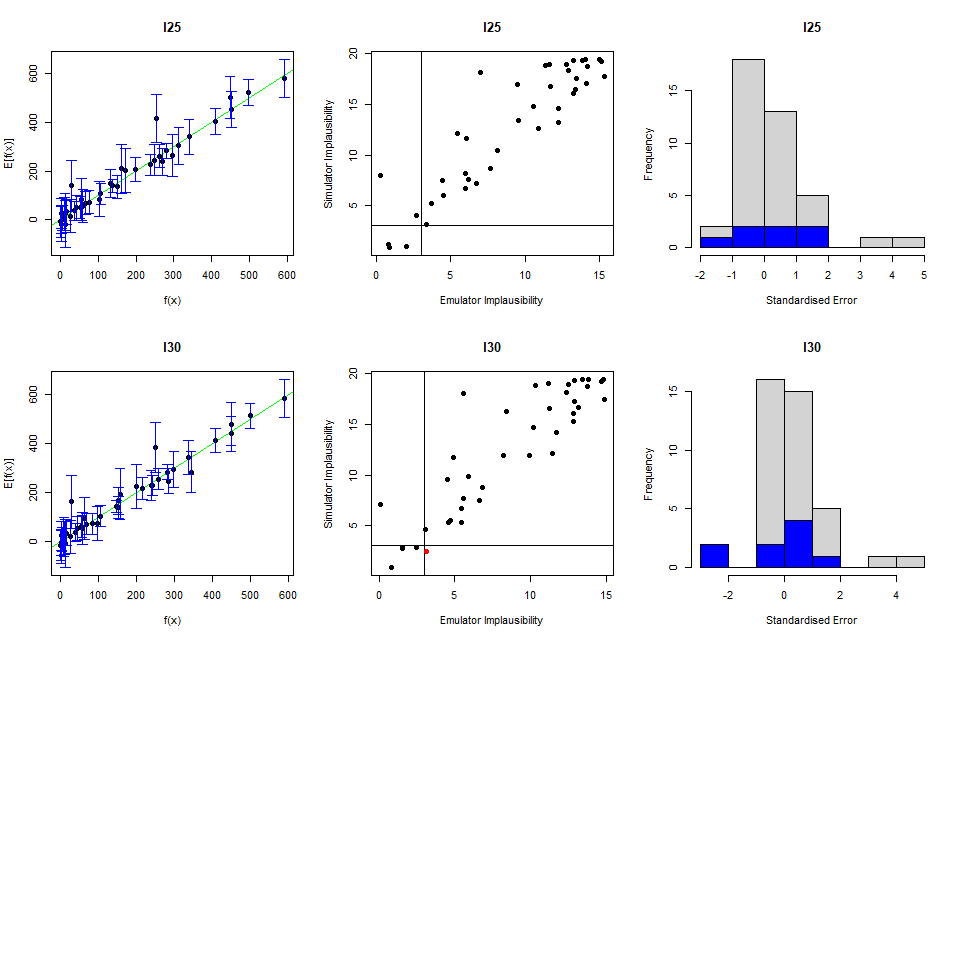

6 Emulator diagnostics
For a given set of emulators, we want to assess how accurately they reflect the model outputs over the input space. In this section three standard emulator diagnostics are introduced together with functions that help us visualise them. We then analyse parameter sets that fail diagnostics.
6.1 The three main diagnostics
The first three diagnostics are relatively straightforward, and can be presented together. For a given validation set, we can ask the following questions:
Within uncertainties, does the emulator output accurately represent the equivalent model output?
What are the standardised errors of the emulator outputs in light of the model outputs?
Does the emulator adequately classify parameter sets as implausible or non-implausible?
These are encapsulated in the validation_diagnostics function.
 
The first column of plots gives an indication of the emulator outputs against the model outputs: emulator outputs are plotted against model outputs with a \(3\sigma\) interval overlaid \(\text{E}(f(x)) \pm 3 \sqrt{ \text{Var}(f(x))}\). An ‘ideal’ emulator would exactly reproduce the model results: this behaviour is represented by the green line \(f(x)=E[f(x)]\). Any parameter set whose emulated prediction lies more than \(3\sigma\) away from the model output is highlighted in red.

The first column of plots gives an indication of the emulator outputs against the model outputs: emulator outputs are plotted against model outputs with a \(3\sigma\) interval overlaid \(\text{E}(f(x)) \pm 3 \sqrt{ \text{Var}(f(x))}\). An ‘ideal’ emulator would exactly reproduce the model results: this behaviour is represented by the green line \(f(x)=E[f(x)]\). Any parameter set whose emulated prediction lies more than \(3\sigma\) away from the model output is highlighted in red.
The second column compares the emulator implausibility to the equivalent model implausibility (i.e. the implausibility calculated replacing the emulator output with the model output). There are three cases to consider:
The emulator and model both classify a set as implausible/non-implausible: this is fine. Both are giving the same classification for the parameter set.
The emulator classifies a set as non-implausible, while the model rules it out: this is also fine. The emulator should not be expected to shrink the parameter space as much as the model does, at least not on a single wave. Parameter sets classified in this way will survive this wave, but may be removed on subsequent waves as the emulators grow more accurate on a reduced parameter space.
The emulator rules out a set, but the model does not: these are the problem sets, suggesting that the emulator is ruling out parts of the parameter space that it should not be ruling out.
Finally, the third column gives the standard errors normalised by the standard deviation. We want most of these to be within \(\pm 3\).
The function validation_diagnostic, along with producing the plots, also returns a data.frame consisting of those parameters sets which failed one or more diagnostic tests.
which_invalid
#> beta gamma delta mu
#> 54 0.7795559 0.8666903 0.1954711 0.1135859
#> 57 0.3472034 0.3934924 0.1272379 0.3672910It is often worth considering these parameter sets, particularly if they lie close to the boundary of the space: having a few parameter sets which fail diagnostics is not the end of the world, but we should at least consider whether the emulator is failing in parts of the space we would want it to be performing well on.
6.2 Parameter sets failing diagnostics
6.2.1 Visualisation
A helper for visualising problematic parameter sets is provided in the function validation_pairs: this gives pairs plots of the parameter sets in the validation data, colouring them by their diagnostic success (bottom left) and predicted implausibility (top right). The diagnostics part gives the maximum standardised error at each point: the standardised error is \[\frac{|\text{emulator expectation}-\text{model value}|}{\sqrt{\text{emulator variance}}}\] for each emulated output and we maximise over the outputs.

6.2.2 Space removed function
One way we can get a feel for what cut-off value is reasonable is via the space_removed function, which for a given set of emulators will determine how much of the input space will be removed by a particular implausibility cut-off. By default, space_removed shows the percentage of space that is removed by a specific wave when:
the sigma values in
targetsare exactly the values provided by the modeller,the sigma values in
targetsare \(80\%\) (resp. \(90\%, 110\%, 120\%\)) of the values provided by the modeller.
space_removed(ems0, targets) + geom_vline(xintercept = 3, lty = 2) + geom_text(aes(x=3, label="x=3",y=0.33), colour="black", angle=90, vjust = 1.2, text=element_text(size=11))
#> Warning in geom_text(aes(x = 3, label = "x=3", y = 0.33), colour = "black", :
#> Ignoring unknown parameters: `text`
A cut-off of \(3\) here, using maximum implausibility, would be sufficient to remove around \(95\%\) of the current parameter space. This is a reasonable level of removal for a first wave: however, if the expected amount of removal was much lower we could consider whether it is sensible to reduce the cut-off.
The diagnostics here give an indication of the suitability of the emulators in emulating the outputs at this wave. If there are particular model outputs for which the emulators do not give a good fit, then we can modify the specifications for that emulator directly (for example, modifying the correlation length, the variance, or the regression surface) and re-train; if the emulator simply cannot provide a good fit to a model output, we can choose not to emulate this output for the wave in question: this is one of the benefits of the history matching approach in that we can use subsets of the outputs at each wave.